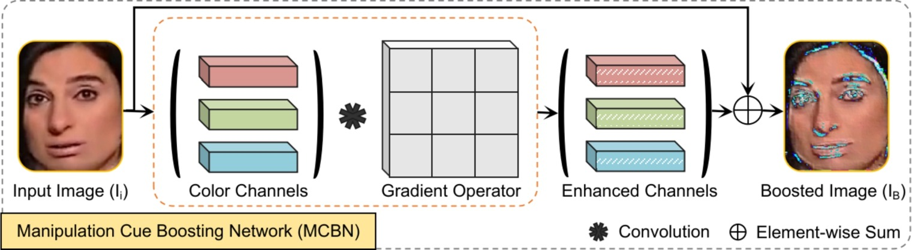
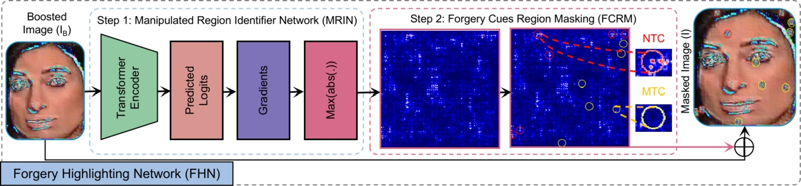
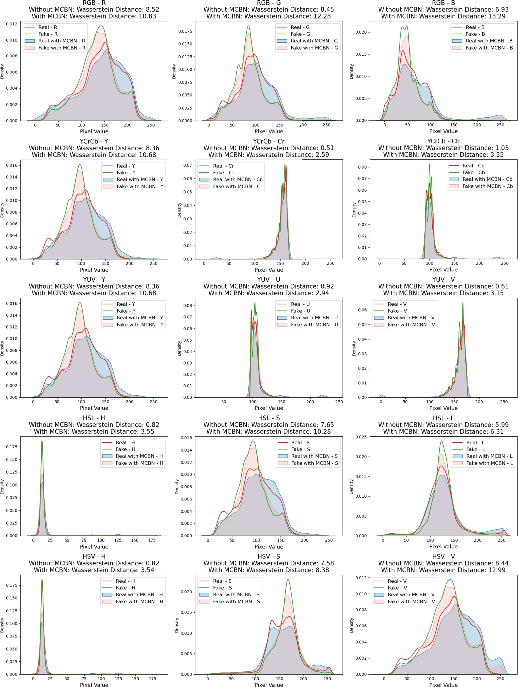
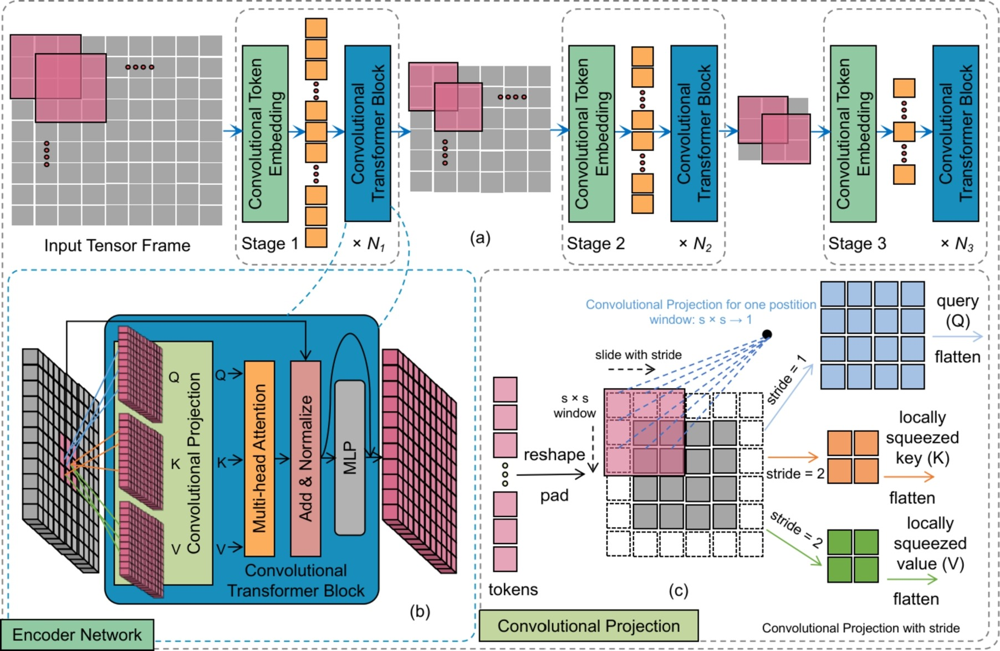
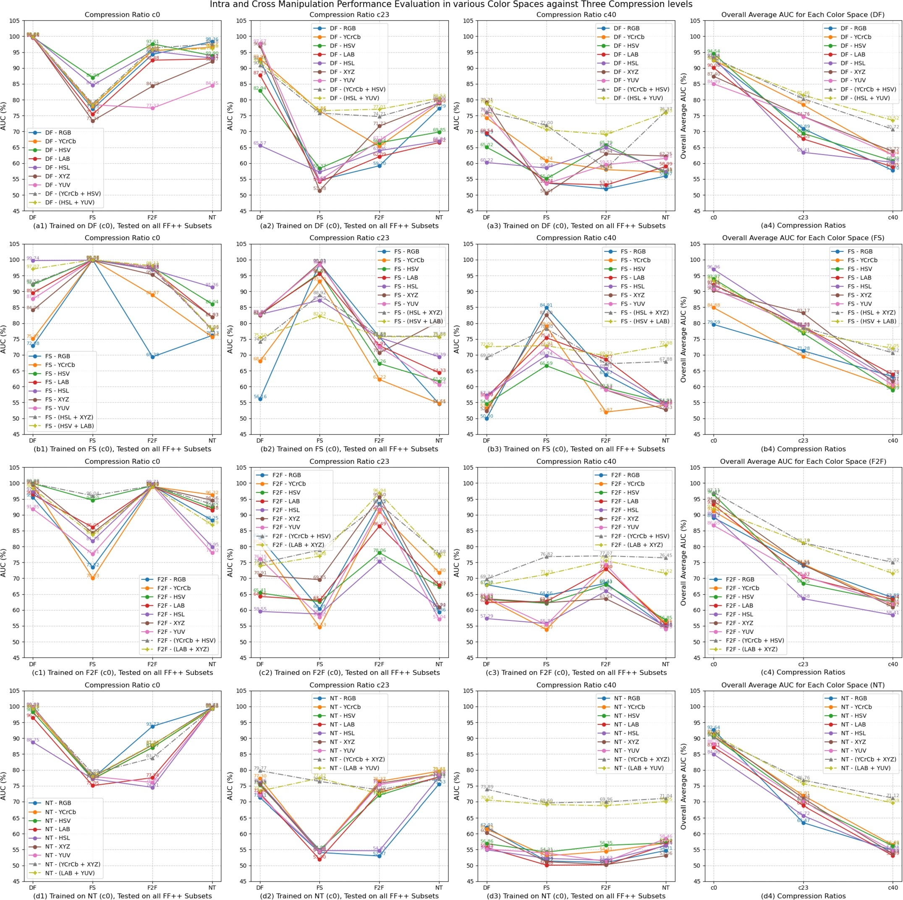
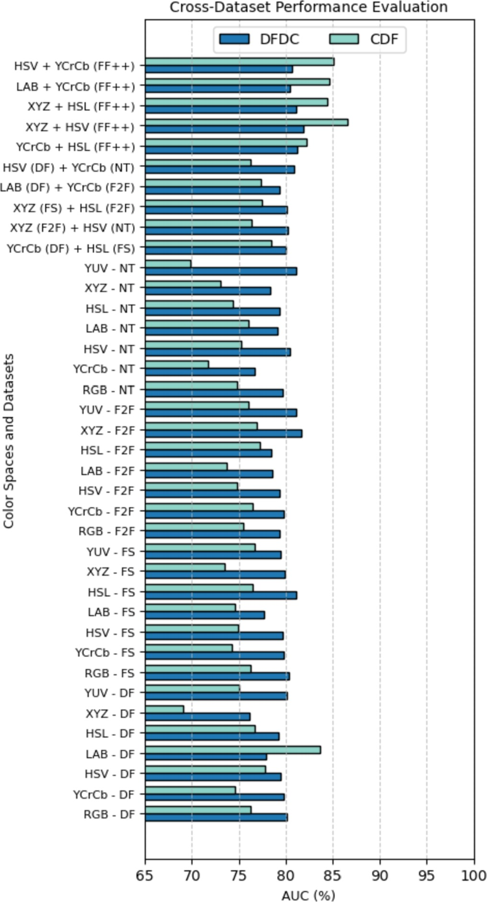

PUBLICATION论文 · Digital Signal Processing · 2024
ABSTRACT摘要
Most existing deepfake detection methods operate exclusively in the RGB color space, where forgery artifacts are increasingly concealed due to improved generative training and post-processing. As a result, these methods struggle with generalization and robustness when facing unseen manipulations, as RGB alone lacks the discriminative power to expose subtle manipulation traces across diverse forgery types. 现有大多数深度伪造检测方法仅在RGB色彩空间中运行，由于生成训练和后处理的改进，伪造伪影在此空间中越来越容易被掩盖。因此，这些方法在面对未见过的篡改时，泛化能力和鲁棒性存在不足，因为RGB本身缺乏暴露跨多种伪造类型细微操纵痕迹的判别能力。
We propose a two-stage framework that exploits seven alternative color spaces (YCrCb, LAB, YUV, HSL, HSV, XYZ) and their optimal combinations. Stage 1 performs representative forgery learning through a Manipulation Cue Boosting Network (MCBN), color space transformations, and a Forgery Highlighting Network (FHN). Stage 2 feeds the enriched representations into a color spaces-based Forgery Detection Network (FDN) built on convolutional vision transformers (CvT). The framework is trained end-to-end with binary cross-entropy loss and evaluated on FaceForensics++, DFDC, and Celeb-DF-v2. 我们提出了一个两阶段框架，利用七种替代色彩空间（YCrCb、LAB、YUV、HSL、HSV、XYZ）及其最优组合。第一阶段通过操纵线索增强网络（MCBN）、色彩空间变换和伪造高亮网络（FHN）进行代表性伪造学习。第二阶段将增强后的表示输入基于卷积视觉Transformer（CvT）的色彩空间伪造检测网络（FDN）。该框架使用二元交叉熵损失进行端到端训练，并在FaceForensics++、DFDC和Celeb-DF-v2上评估。
Our FDN with optimal color space combinations achieves up to 94.54% average AUC in intra- and cross-manipulation settings (HSV, trained on DF), outperforming 10 state-of-the-art methods. In cross-dataset evaluation, the XYZ + HSV combination reaches 81.93% AUC on DFDC and 86.56% AUC on CDF. Combined color spaces improve c40 compression robustness by 10–15% over individual spaces. 我们的FDN在最佳色彩空间组合下，在数据集内和跨操纵设置中达到94.54%的平均AUC（HSV，DF训练），超越10种最先进方法。在跨数据集评估中，XYZ + HSV组合在DFDC上达到81.93% AUC，在CDF上达到86.56% AUC。组合色彩空间将c40压缩鲁棒性比单空间提升10–15%。
METHOD方法
A lightweight preprocessing module that applies a diagonal gradient operator (Prewitt) via convolution to each color channel, then element-wise sums the enhanced channels back with the original image. This amplifies blending boundary artifacts and subtle manipulation traces that are otherwise invisible to the naked eye. Wasserstein distance analysis confirms that MCBN significantly increases the distributional gap between real and fake images across all color channels, with gains of 2–6 WD points. 一个轻量级预处理模块，通过卷积对每个色彩通道应用对角梯度算子（Prewitt），然后将增强通道与原始图像逐元素相加。这放大了融合边界伪影和肉眼不可见的细微操纵痕迹。Wasserstein距离分析证实MCBN在所有色彩通道上显著增大了真实与伪造图像间的分布差距，增益达2–6个WD点。
The boosted image is transformed into seven color spaces: RGB, YCrCb, LAB, YUV, HSL, HSV, XYZ. Each space decomposes the image into channels that reveal different aspects of forgery artifacts. For instance, chrominance channels (Cr, Cb) in YCrCb expose color inconsistencies at blending boundaries, while luminance channels (L in LAB) highlight texture irregularities. The framework evaluates all 21 pairwise combinations to identify the most discriminative color space pairs for each manipulation type. 增强后的图像被变换为七种色彩空间：RGB、YCrCb、LAB、YUV、HSL、HSV、XYZ。每个空间将图像分解为揭示伪造伪影不同方面的通道。例如，YCrCb中的色度通道（Cr、Cb）暴露混合边界处的颜色不一致，而LAB中的亮度通道（L）突出纹理不规则性。该框架评估所有21对组合，以识别每种操纵类型最具判别力的色彩空间对。
An auxiliary supervision module with two steps: (1) MRIN (Manipulation Region Identification Network) generates gradient-based sensitivity maps to locate potential forgery regions, and (2) FCRM (Forgery Cue Region Masking) selectively erases both high-sensitivity (NTC) and low-sensitivity texture-inconsistency (MTC) patches. This forces the detector to discover forgery cues from previously ignored facial regions, improving generalization to unseen manipulations by preventing over-reliance on dominant artifact locations. 一个辅助监督模块，分两步进行：（1）MRIN（操纵区域识别网络）生成基于梯度的敏感度图以定位潜在伪造区域，（2）FCRM（伪造线索区域掩码）选择性擦除高敏感度（NTC）和低敏感度纹理不一致（MTC）区域。这迫使检测器从先前被忽略的面部区域发现伪造线索，通过防止对主导伪影位置的过度依赖，提升对未知操纵的泛化能力。
A dual-encoder convolutional vision transformer (CvT) backbone that processes two color space inputs in parallel. Features from each encoder are fused via element-wise addition, followed by convolutional refinement, global average pooling, and a linear classifier. The network is initialized from ImageNet-pretrained CvT weights and fine-tuned on deepfake data with AdamW optimizer, cosine annealing scheduler, and binary cross-entropy loss. The dual-stream architecture enables complementary color space information to reinforce discriminative features. 一个双编码器卷积视觉Transformer（CvT）骨干网络，并行处理两个色彩空间输入。来自每个编码器的特征通过逐元素加法融合，经卷积精炼、全局平均池化和线性分类器。网络从ImageNet预训练CvT权重初始化，使用AdamW优化器、余弦退火调度器和二元交叉熵损失在深度伪造数据上微调。双流架构使互补色彩空间信息能够增强判别特征。

Fig. 2 — MCBN: gradient-based cue enhancement across color channels. © 2024 Elsevier. 图2 — MCBN：跨色彩通道的基于梯度的线索增强。© 2024 Elsevier。
Fig. 3 — FHN: MRIN + FCRM pipeline for forgery region highlighting. © 2024 Elsevier. 图3 — FHN：用于伪造区域高亮的MRIN + FCRM流程。© 2024 Elsevier。
Fig. 4 — WD analysis: MCBN amplifies real/fake distribution gap across 15 color channels. © 2024 Elsevier. 图4 — WD分析：MCBN在15个色彩通道上放大真实/伪造分布差距。© 2024 Elsevier。
Fig. 5 — FDN encoder: convolutional transformer with dual-stream feature fusion. © 2024 Elsevier. 图5 — FDN编码器：具有双流特征融合的卷积Transformer。© 2024 Elsevier。RESULTS结果
Trained on individual FF++ manipulations (DeepFakes, FaceSwap, Face2Face, NeuralTextures) and tested both intra-domain and cross-domain. The HSV color space achieves the highest average AUC of 94.54% when trained on DeepFakes, with strong cross-manipulation performance: 96.42% on DF→DF, 92.77% on DF→FS, 90.61% on DF→F2F, and 98.36% on DF→NT. Combined color spaces (XYZ + HSV, LAB + HSV) consistently outperform single spaces by 3–8% AUC across all manipulation types. 在FF++的单个操纵（DeepFakes、FaceSwap、Face2Face、NeuralTextures）上训练，并在数据集内和跨域上测试。HSV色彩空间在DeepFakes训练时达到最高平均AUC 94.54%，具有强大的跨操纵性能：DF→DF为96.42%，DF→FS为92.77%，DF→F2F为90.61%，DF→NT为98.36%。组合色彩空间（XYZ + HSV、LAB + HSV）在所有操纵类型上持续超越单空间3–8% AUC。
Trained on FF++ (all manipulations) and tested without fine-tuning on DFDC and Celeb-DF-v2. The XYZ + HSV combination achieves 81.93% AUC on DFDC and 86.56% AUC on CDF, outperforming RGB-only baselines by 5–10%. The LAB + XYZ combination also shows strong generalization with 80.27% on DFDC and 85.12% on CDF. These results confirm that multi-color-space analysis captures domain-invariant forensic cues that RGB alone misses. 在FF++（所有操纵）上训练，在DFDC和Celeb-DF-v2上无微调测试。XYZ + HSV组合在DFDC上达到81.93% AUC，在CDF上达到86.56% AUC，超越仅RGB基线5–10%。LAB + XYZ组合也展示了强大的泛化能力，在DFDC上为80.27%，在CDF上为85.12%。这些结果证实多色彩空间分析捕获了RGB单独遗漏的域不变取证线索。
Evaluated on heavily compressed FF++ videos (c40). Combined color spaces improve c40 compression robustness by 10–15% over individual spaces. The XYZ + HSV combination maintains 78.50% average AUC on c40, while single spaces like RGB drop to 65–70%. This resilience stems from the fact that different color spaces encode compression artifacts in complementary ways, allowing the fused detector to recover forensic signals even when individual channels are degraded. 在重度压缩的FF++视频（c40）上评估。组合色彩空间将c40压缩鲁棒性比单空间提升10–15%。XYZ + HSV组合在c40上保持78.50%平均AUC，而RGB等单空间降至65–70%。这种韧性源于不同色彩空间以互补方式编码压缩伪影，使融合检测器即使在单个通道退化时也能恢复取证信号。

Fig. 6 — Intra- & cross-manipulation AUC (%) across color spaces on FF++. © 2024 Elsevier. 图6 — FF++上跨色彩空间的数据集内与跨操纵AUC（%）。© 2024 Elsevier。
Fig. 7 — Cross-dataset AUC (%) on DFDC and CDF. Combined spaces outperform RGB. © 2024 Elsevier. 图7 — DFDC和CDF上的跨数据集AUC（%）。组合空间超越RGB。© 2024 Elsevier。LIMITATIONS & FUTURE WORK局限性与未来工作
Heavy compression (c40). Lossy compression discards high-frequency texture details that carry forgery artifacts, degrading performance at c40. While combined color spaces mitigate this by 10–15%, the gap to c0 performance remains significant. Future work could explore compression-aware pre-training or artifact restoration modules. 重度压缩（c40）。有损压缩丢弃了携带伪造伪影的高频纹理细节，导致c40性能下降。虽然组合色彩空间缓解了10–15%，但与c0性能的差距仍然显著。未来工作可探索压缩感知预训练或伪影恢复模块。
Spatial domain only. The current framework operates on individual frames. Temporal inconsistencies across video frames—such as flickering artifacts, inconsistent eye blinking, or frame-to-frame coherence violations—are not explicitly modeled. Extending to bi-level temporal coherence analysis could further improve detection of sophisticated forgeries that are spatially consistent but temporally inconsistent. 仅限空间域。当前框架在单帧上操作。视频帧间的时序不一致性——如闪烁伪影、不一致眨眼或帧间一致性违反——未被显式建模。扩展到双层时序一致性分析可进一步提升对空间一致但时间不一致的高级伪造的检测能力。
Adaptive color space selection. The optimal color space combination varies across manipulation types and datasets. An adaptive selection mechanism that automatically identifies the best color spaces for a given input remains an open problem. A lightweight gating network or attention-based selection module could dynamically weight color spaces based on input characteristics. 自适应色彩空间选择。最佳色彩空间组合因操纵类型和数据集而异。能自动为给定输入识别最佳色彩空间的自适应选择机制仍是一个开放问题。轻量级门控网络或基于注意力的选择模块可根据输入特征动态加权色彩空间。
BIBTEX引用
@article{AMIN2024104426,
author = {Muhammad Ahmad Amin and Yongjian Hu and Yu Guan and Muhammad Zain Amin},
title = {Exploring varying color spaces through representative forgery learning to improve deepfake detection},
journal = {Digital Signal Processing},
volume = {147},
pages = {104426},
year = {2024},
issn = {1051-2004},
doi = {10.1016/j.dsp.2024.104426},
publisher = {Elsevier}
}COPYRIGHT NOTICE版权声明
© 2024 Elsevier Inc. Personal use of this material is permitted. Permission from Elsevier must be obtained for all other uses, including reprinting/republishing this material for advertising or promotional purposes, creating new collective works, for resale or redistribution to servers or lists, or reuse of any copyrighted component of this work in other works. © 2024 Elsevier Inc。允许个人使用此材料。所有其他用途必须获得Elsevier许可，包括重印/再版此材料用于广告或促销目的、创建新的集体作品、转售或重新分发到服务器或列表，或在其他作品中重用此作品的任何受版权保护的组件。
This page is a personal academic landing page. The full paper is available via ScienceDirect. Figures are reproduced with permission from Digital Signal Processing. 本页面为个人学术着陆页。完整论文可通过ScienceDirect获取。图表经Digital Signal Processing许可转载。